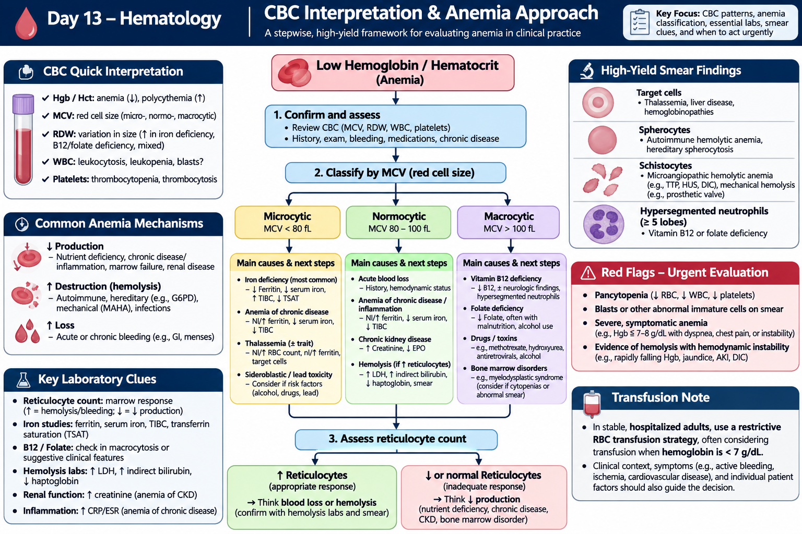
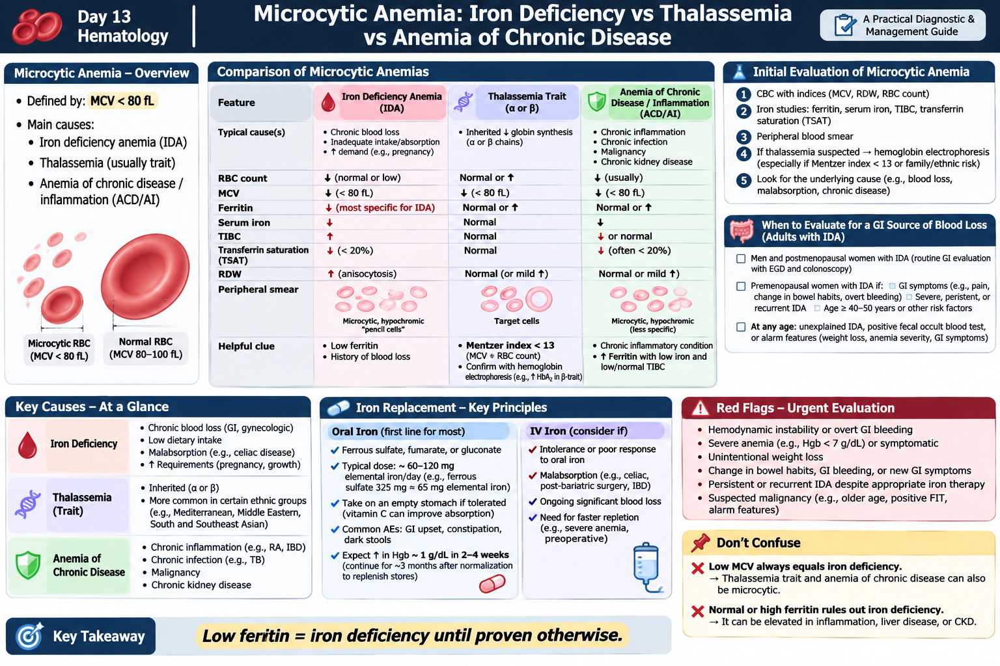
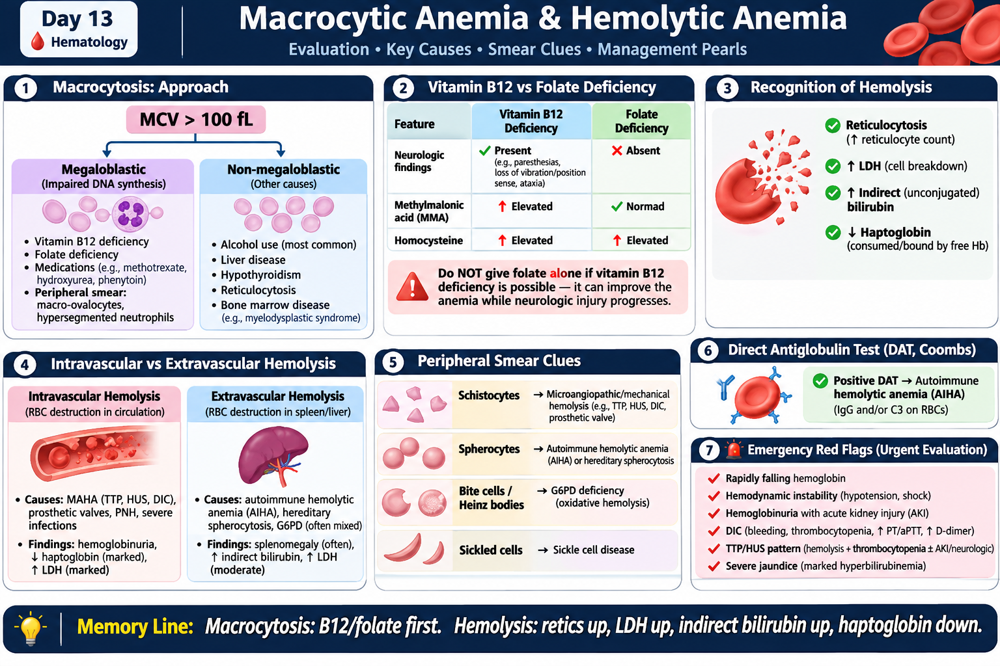
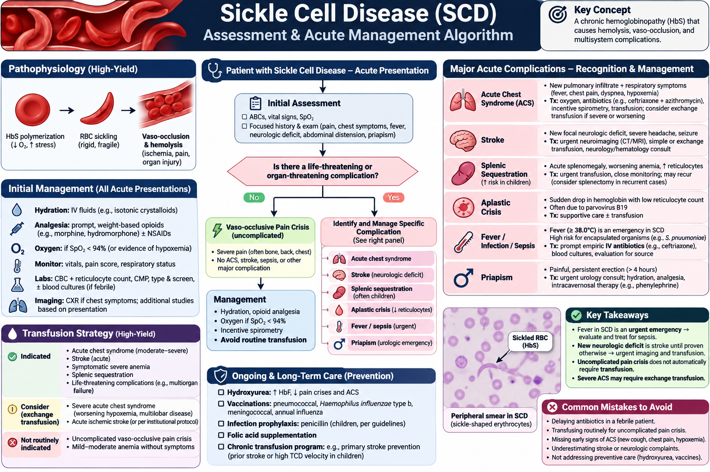
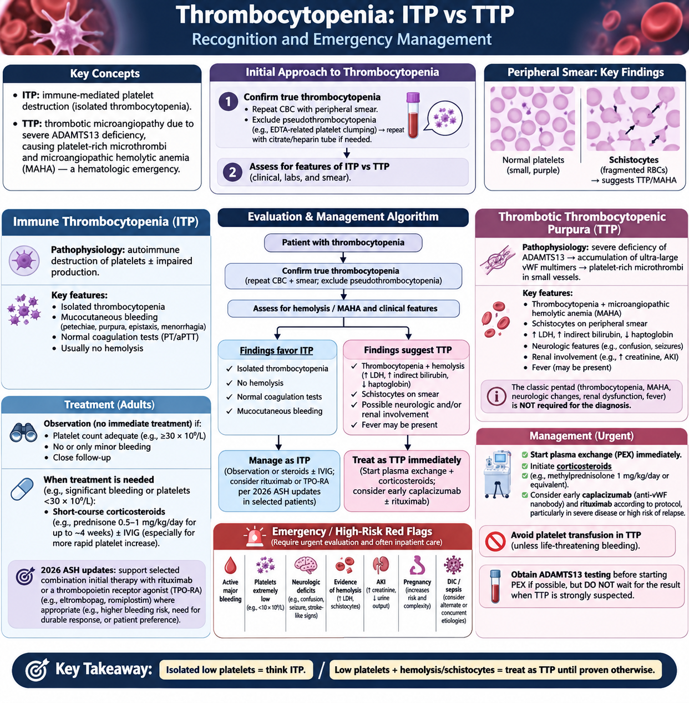
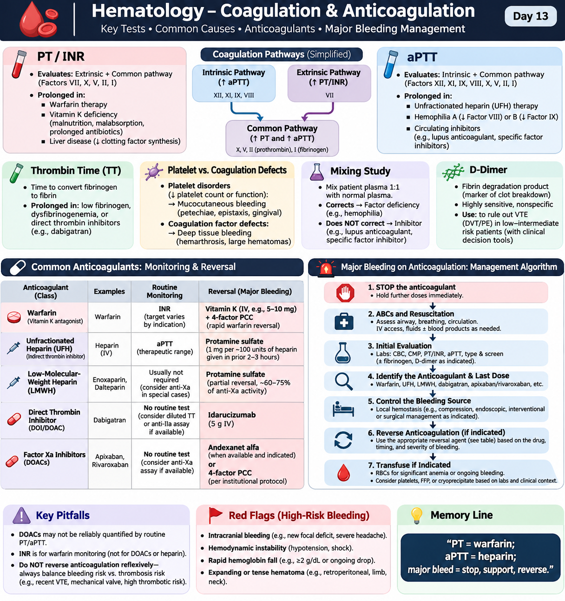
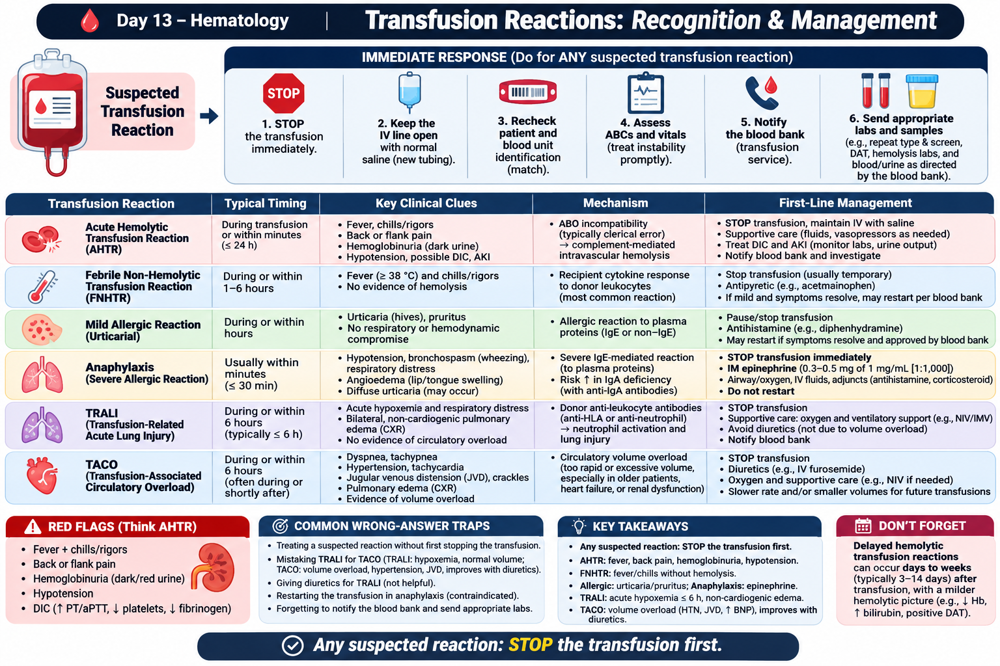

🩸 Anemia, Platelets, Coagulation & Transfusion
High-yield CBC patterns, anemia classification, hemolysis, sickle cell emergencies, thrombocytopenia, anticoagulation and transfusion reactions.
80 questions
CBC Interpretation & Anemia Approach
Use CBC indices and reticulocytes to classify anemia before ordering a broad workup.
Stepwise interpretation
- Review Hgb/Hct, MCV, RDW, WBC and platelets.
- Classify microcytic, normocytic or macrocytic; then use reticulocyte response.
- Trends and clinical context matter: bleeding, renal disease, inflammation, medications, nutrition.
Reticulocyte logic
- High reticulocytes suggest blood loss or hemolysis.
- Low/inappropriately normal reticulocytes suggest reduced production.
- Smear morphology can rapidly redirect the diagnosis.
Smear clues
- Target cells: thalassemia/liver disease/hemoglobinopathy.
- Spherocytes: AIHA or hereditary spherocytosis.
- Schistocytes: TMA/mechanical hemolysis; hypersegmented neutrophils: megaloblastic anemia.
Red flags
- Pancytopenia, blasts or severe unexplained cytopenias require urgent evaluation.
- Rapidly falling Hgb with jaundice, AKI or instability suggests active hemolysis/bleeding.
- Transfusion decisions depend on symptoms, active bleeding and clinical context.
🩺 CBC Interpretation & Anemia Approach
Click to open/close.
Microcytic Anemia: Iron Deficiency vs Thalassemia
Separate IDA, thalassemia trait and anemia of chronic disease using ferritin, iron indices and RBC patterns.
Iron deficiency anemia
- Low ferritin strongly supports IDA; iron low, TIBC often high, TSAT low.
- Common causes: chronic blood loss, low intake or malabsorption.
- Adult men/postmenopausal women with unexplained IDA generally need GI source evaluation.
Thalassemia trait
- MCV can be very low with preserved/high RBC count.
- Ferritin usually normal unless iron deficiency coexists; target cells may appear.
- Hemoglobin electrophoresis helps confirm suspected hemoglobinopathy.
Chronic disease/inflammation
- Serum iron low, ferritin often normal/high, TIBC low/normal.
- Treat the underlying inflammatory, infectious, renal or malignant disorder.
Traps
- Low MCV does not automatically mean iron deficiency.
- Normal ferritin can mask iron deficiency during inflammation.
- Persistent/recurrent IDA needs a cause, not repeated empiric iron alone.
🩺 Microcytic Anemia: IDA vs Thalassemia vs Chronic Disease
Click to open/close.
Macrocytic Anemia: B12 & Folate
Recognize megaloblastic macrocytosis and protect the nervous system when B12 deficiency is possible.
Megaloblastic pattern
- MCV >100 fL with macro-ovalocytes and hypersegmented neutrophils suggests impaired DNA synthesis.
- Main causes: B12 deficiency, folate deficiency and selected medications.
B12 vs folate
- B12 deficiency may cause paresthesias, gait change or loss of vibration sense; MMA rises.
- Folate deficiency generally lacks neurologic findings; homocysteine rises in both.
- Do not give folate alone if B12 deficiency is possible with neurologic disease.
Non-megaloblastic causes
- Alcohol, liver disease, hypothyroidism, reticulocytosis and marrow disorders.
- Review medications and alcohol history carefully.
Red flags
- Neurologic deficits with suspected B12 deficiency need prompt treatment.
- Macrocytosis plus other cytopenias raises concern for marrow disease.
🩺 Macrocytic Anemia & Hemolysis Review
Click to open/close.
Hemolytic Anemia Basics
Recognize hemolysis using reticulocytes, LDH, bilirubin, haptoglobin and smear morphology.
Laboratory pattern
- Reticulocytosis, ↑LDH, ↑indirect bilirubin and ↓haptoglobin are classic.
- Hemoglobinuria favors intravascular hemolysis.
Smear / DAT
- Positive DAT supports immune hemolysis.
- Schistocytes: TTP/HUS/DIC/mechanical hemolysis.
- Bite cells/Heinz bodies suggest oxidative hemolysis such as G6PD deficiency.
Intravascular vs extravascular
- Intravascular: marked LDH rise, hemoglobinuria, very low haptoglobin.
- Extravascular: splenic/liver clearance, indirect bilirubin elevation and possible splenomegaly.
Emergency pattern
- Hemolysis + thrombocytopenia + schistocytes = hematologic emergency until TTP/TMA excluded.
- Rapid Hgb fall with instability requires immediate stabilization.
🩺 Macrocytic & Hemolytic Anemia High-Yield Guide
Click to open/close.Sickle Cell Disease & Acute Crisis
Treat vaso-occlusive pain while actively looking for ACS, stroke, sepsis and other organ-threatening complications.
Initial assessment
- ABCs, vitals, SpO₂ and focused exam for pain, fever, chest symptoms, focal deficit, splenic enlargement or priapism.
- CBC + reticulocytes and targeted tests.
Uncomplicated pain crisis
- Prompt analgesia, individualized hydration, oxygen only if hypoxemic.
- Routine transfusion is not indicated for uncomplicated pain crisis.
Major complications
- Acute chest syndrome: new infiltrate + respiratory symptoms; treat urgently, consider transfusion/exchange based on severity.
- Stroke: urgent imaging and transfusion strategy.
- Fever is an emergency because of functional asplenia.
Never miss
- Severe ACS, stroke, splenic sequestration, aplastic crisis and sepsis can deteriorate rapidly.
- Priapism >4 h is a urologic emergency.
🩺 Sickle Cell Disease: Acute Assessment & Management
Click to open/close.
Thrombocytopenia: ITP vs TTP
Use isolated thrombocytopenia versus thrombocytopenia with MAHA to separate ITP from TTP.
First steps
- Confirm true thrombocytopenia and exclude pseudothrombocytopenia.
- Review bleeding, medications, infection, liver disease, pregnancy and other cytopenias.
ITP pattern
- Usually isolated thrombocytopenia with normal coagulation studies and no hemolysis.
- Observation is reasonable for selected adults with adequate platelets and minor/no bleeding; treatment depends on bleeding risk and patient factors.
- 2026 ASH guidance updates initial and second-line adult therapy.
TTP pattern
- Thrombocytopenia + MAHA, often with neurologic/renal involvement; full pentad not required.
- Draw ADAMTS13 before plasma exchange if feasible, but do not delay treatment.
- Acute iTTP: plasma exchange + corticosteroids; caplacizumab/rituximab according to current protocol.
Emergency rule
- Low platelets + hemolysis/schistocytes = urgent TTP pathway.
- Avoid routine platelet transfusion in TTP unless life-threatening bleeding/compelling indication.
🩺 Thrombocytopenia: ITP vs TTP
Click to open/close.
Coagulation Tests & Anticoagulants
Interpret PT/INR and aPTT and know major-bleeding reversal principles.
PT/INR and aPTT
- PT/INR: extrinsic/common pathway; warfarin monitoring.
- aPTT: intrinsic/common pathway; commonly used for UFH monitoring.
- Both may prolong in severe liver disease, DIC or common-pathway deficiency.
Bleeding pattern
- Platelet disorders: mucocutaneous bleeding.
- Factor deficiencies: deep tissue bleeding/hemarthroses.
- Mixing study correction suggests factor deficiency; failure to correct suggests inhibitor.
Reversal pearls
- Major bleeding: stop anticoagulant, resuscitate, identify drug/last dose, reverse when indicated.
- Warfarin major bleed: IV vitamin K + 4-factor PCC.
- UFH: protamine; dabigatran: idarucizumab; factor Xa reversal per protocol.
Pitfalls
- PT/aPTT do not reliably quantify DOAC effect.
- D-dimer is sensitive but nonspecific; use with pretest probability.
🩺 Coagulation & Anticoagulation: Tests and Major Bleeding
Click to open/close.
Transfusion Reactions
For any suspected transfusion reaction: stop the transfusion, stabilize the patient and notify the blood bank.
Immediate response
- STOP the transfusion; keep IV open with normal saline/new tubing.
- Recheck patient/unit ID, assess ABCs/vitals, notify transfusion service.
- Send blood/urine samples and repeat testing as directed.
Pattern recognition
- AHTR: fever/rigors, flank/back pain, hemoglobinuria, hypotension, DIC/AKI.
- FNHTR: fever/chills without hemolysis.
- Mild allergic: urticaria/pruritus; anaphylaxis: hypotension/bronchospasm/angioedema.
TRALI vs TACO
- TRALI: acute hypoxemia + bilateral noncardiogenic pulmonary edema; supportive care, avoid reflex diuresis.
- TACO: overload with hypertension/JVD/pulmonary edema; oxygen + diuresis.
Never miss
- Do not restart transfusion in anaphylaxis.
- Delayed hemolytic reactions occur days to weeks later.
- Severe respiratory distress, hypotension, hemoglobinuria or DIC requires urgent action.
🩺 Transfusion Reactions: Recognition & Management
Click to open/close.
⚡ Day 13 Rapid Review
Day 13 completion
Mark complete when you finish the notes, practice questions and QBank block.